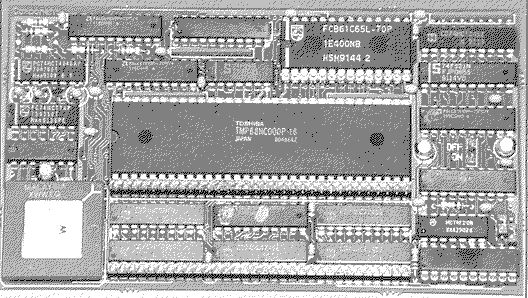
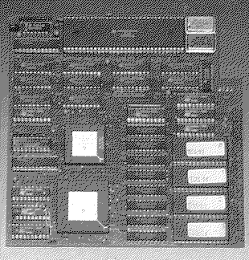

Previous
Next
TOC
Die HBS 240 von Heyer & Neumann

CPU Takt 8 oder 16MHz
Cachegröße 16 Kilobyte
16Mhz kommen vom Videochip (Pin 39 oder Pin 5 der MCU)
MC68881 FPU kann nachgerüstet werden
FASTROM-Betriebsart bei Eprom schneller 100ns Zugriffszeit
Soundchip (Pin 14) schaltet den Cache ein oder aus (Drahtverbindung)
oder über einen prellfreien Schalter
Der HyperCACHE-030 von Wacker / proVME

CPU Takt 25MHz oder 33MHz je nach ausführung (MC68030 CPU)
Modifiziertes TOS 1.04 im Lieferumfang
Bei problemen kann man auf die onboard MC68000 zurückschalten
FPU (MC68882) kann nachgerüstet werden
Blitterchip muß abgeschaltet oder ausgebaut werden
Kapitel Die Beschleunigerboards, Seite 8